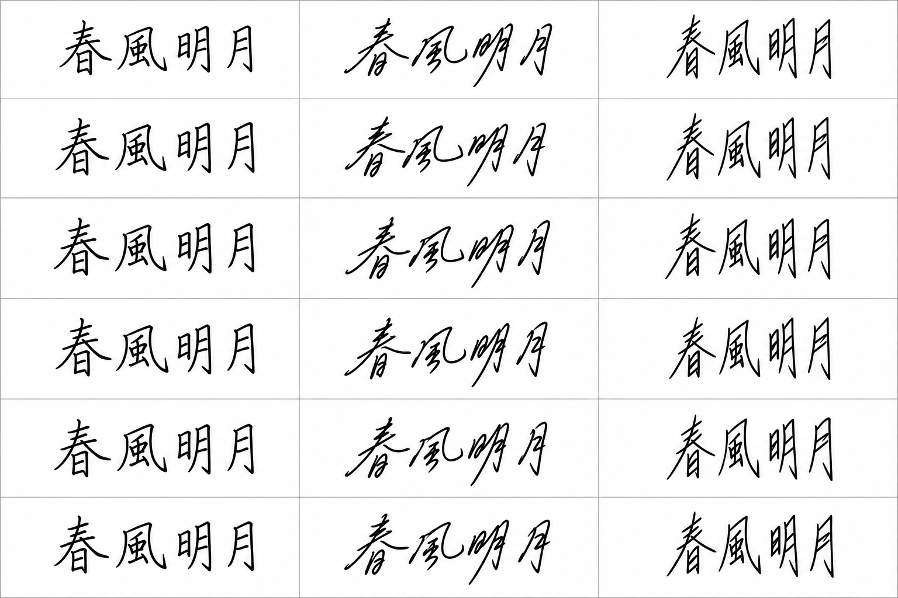
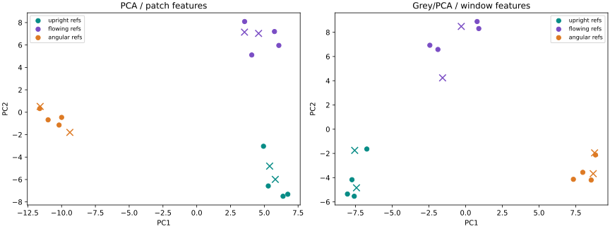

SYNTHETIC DEMO · 合成資料 · 非真實量測／鑑識證據
AI 合成筆跡：Grey/PCA 參考比對
同一張 AI 生成頁的 18 格；12 格作參考、6 格作查詢。只比較人為設定的三種字形風格。
合成樣本
每欄一種風格，前四排作參考、後兩排作查詢。沒有真實作者資料，沒有把參考圖直接複製為查詢。

參考與查詢的特徵分布
圓點是參考，叉號是未參與擬合的查詢。每個方法各自擬合，因此兩張圖的座標軸不能直接互比。

| 方法 | 合成風格命中格數 |
|---|
| PCA / patch features | 6/6 |
| Grey/PCA / window features | 6/6 |
每格查詢的最近參考
| 方法 | 查詢 | 指定風格 | 最近參考 | 參考風格 | 距離 | 命中 |
|---|
| PCA / patch features | row5_style1 | upright | row4_style1 | upright | 3.497 | True |
| PCA / patch features | row5_style2 | flowing | row3_style2 | flowing | 2.137 | True |
| PCA / patch features | row5_style3 | angular | row4_style3 | angular | 1.506 | True |
| PCA / patch features | row6_style1 | upright | row2_style1 | upright | 3.556 | True |
| PCA / patch features | row6_style2 | flowing | row1_style2 | flowing | 3.181 | True |
| PCA / patch features | row6_style3 | angular | row1_style3 | angular | 1.150 | True |
| Grey/PCA / window features | row5_style1 | upright | row1_style1 | upright | 6.031 | True |
| Grey/PCA / window features | row5_style2 | flowing | row4_style2 | flowing | 1.742 | True |
| Grey/PCA / window features | row5_style3 | angular | row4_style3 | angular | 0.324 | True |
| Grey/PCA / window features | row6_style1 | upright | row1_style1 | upright | 4.823 | True |
| Grey/PCA / window features | row6_style2 | flowing | row2_style2 | flowing | 3.772 | True |
| Grey/PCA / window features | row6_style3 | angular | row1_style3 | angular | 1.356 | True |
這個 demo 的範圍
命中率只描述同一張合成頁的字形風格，不能當成真實筆跡作者辨識準確率。這裡沒有把作者／風格編號當成連續數值送入 GRA；Grey 部分是窗口特徵，PCA 用來整理表示。